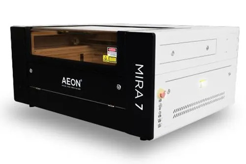

Jesse Degn
Tools

Prusa Mini+
Prusa Mini+ is a compact, 3D printer designed by Prusa Research used for small scaled projects. Uses materials like PLA and flexible filaments to create the prints. It delivers high quality prints with an easy setup.

Raised3D E2
Raised3D E2 is a dual-extruder 3D printer that delivers precise, reliable prints. Its independent extruders allow two-color or two-material jobs, and the enclosed chamber improves consistency. It’s built for fast, accurate prototyping with an easy touchscreen setup.

Aeon Mira 7
Aeon Mira 7 is a compact CO₂ laser cutter and engraver designed for fast, precise fabrication. It can cut and engrave materials like wood, acrylic, leather, and cardboard with high accuracy, and its enclosed design helps keep the workspace safe and clean. The Mira 7 is ideal for quick prototyping, detailed etching, and producing custom parts.